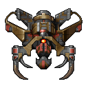
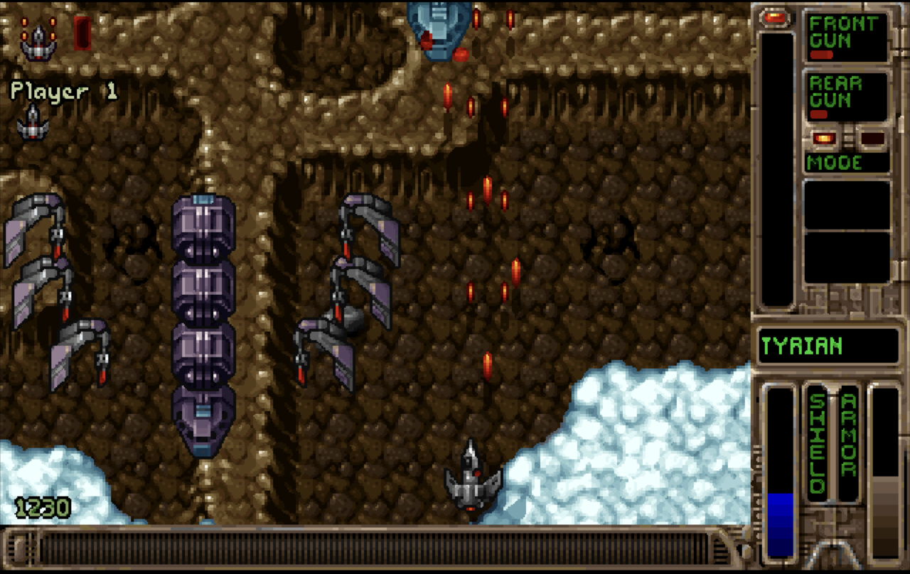
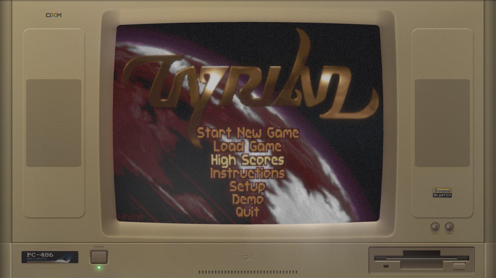

The 1995 DOS shooter, running natively on the machine you have now.
Free. The game data is inside the download — nothing to install, nothing to hunt for.

Every package carries SDL2 and the freeware Tyrian 2.1 data inside it. Unpack it and play — no dependencies, no data files to find, no launcher.
Apple Silicon and Intel, one universal app
Unzip and open OpenTyrian.app. It is not notarized, so the first time: right-click the app, choose Open, confirm once.
x86_64 and arm64
Extract and run ./opentyrian. SDL2 is linked in statically, so the binary needs nothing but glibc — X11 or Wayland, ALSA or PulseAudio, whichever you have is picked up at run time.
x86_64 and arm64
Unzip and run opentyrian.exe. The DLLs it needs travel with it.
All releases and changelogs ·
Saves and settings live in ~/.config/opentyrian or %APPDATA%\OpenTyrian, so they survive an update.
A vertical scrolling shooter set in the year 20,031: fly against MicroSol across four episodes, spend what you salvage on hulls, guns and sidekicks, and try to keep the screen from filling up. Story mode, one- and two-player arcade, and networked multiplayer.
Same levels, same weapons, same music. This is the DOS game's own logic, not a remake.
Nearest, Scale2x, Scale3x and hq2x through hq4x, at integer or 4:3 scaling, windowed or full screen.
Rebindable keys, joystick and gamepad support, mouse control in the menus and in flight.
The same source builds as a core for DOS ex Machina, which boots a simulated PC, drops you at a C:\> prompt, and runs the game on a CRT you can count the scanlines on.
The .dxm files on the releases page are that build — the game as a loadable module, one per platform. They are not standalone programs; DXM opens them.

The game code does not know what it is running on. Everything platform-specific — the screen, the keyboard, the clock, the audio device, the files — sits behind a single header, src/platform.h. One implementation drives SDL2 for the standalone builds; another maps the same seam onto DXM's host interface, linking no SDL at all.
That is what lets the identical code ship as a desktop game and as a module inside a simulated machine, and it is checked on every commit: five platforms built, and the module audited for a single stray symbol.